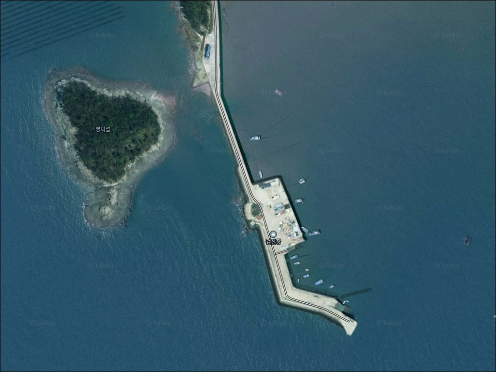
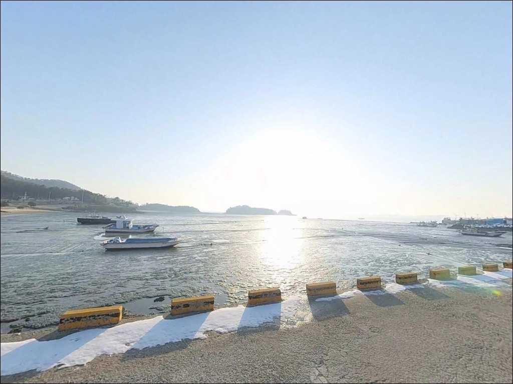
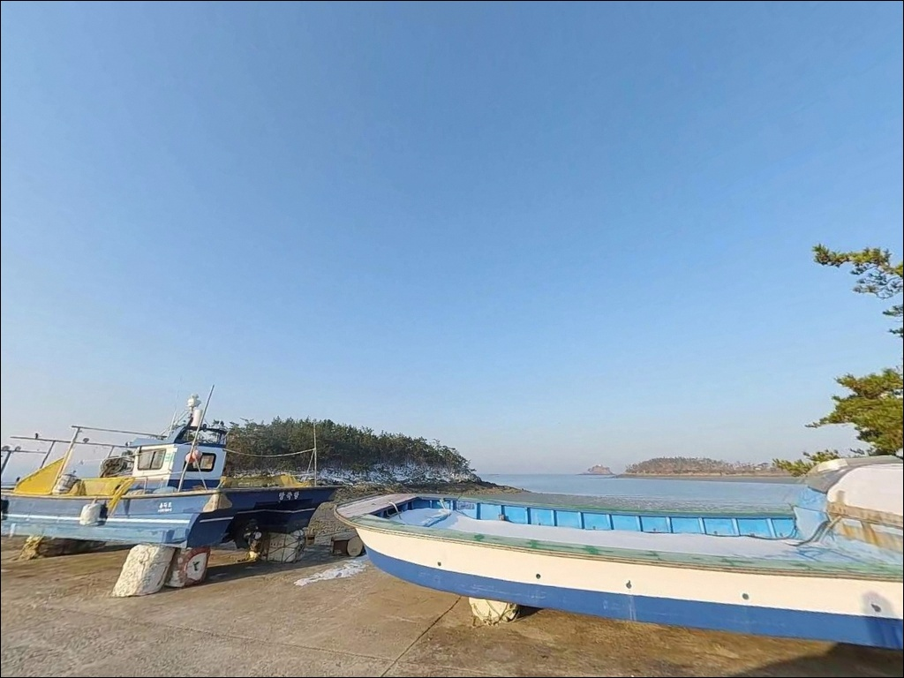
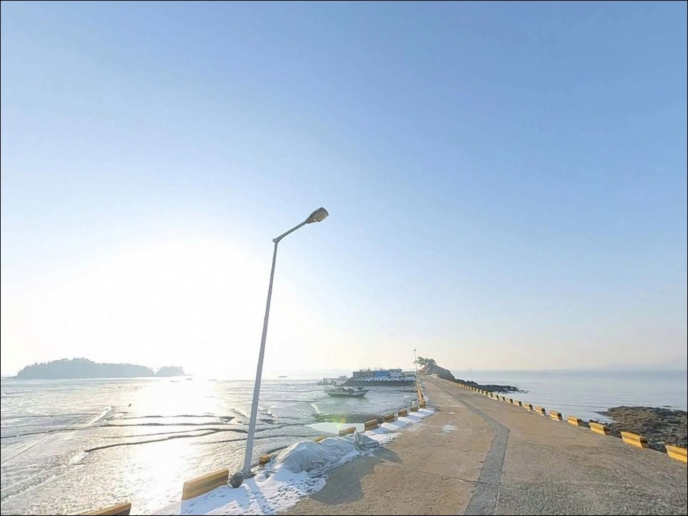
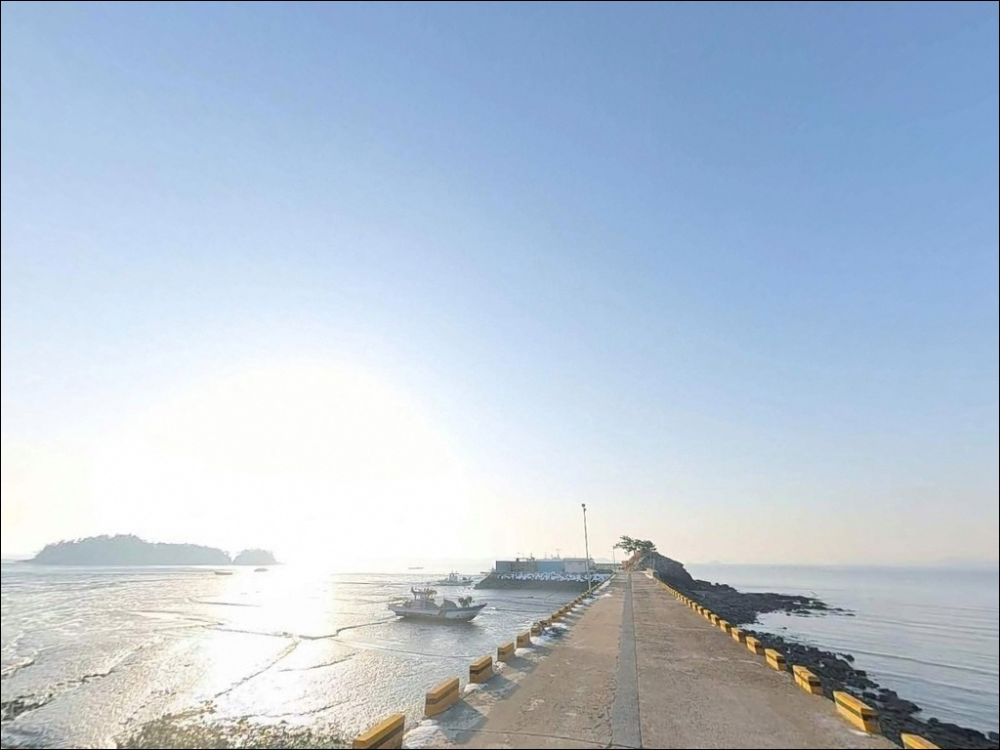
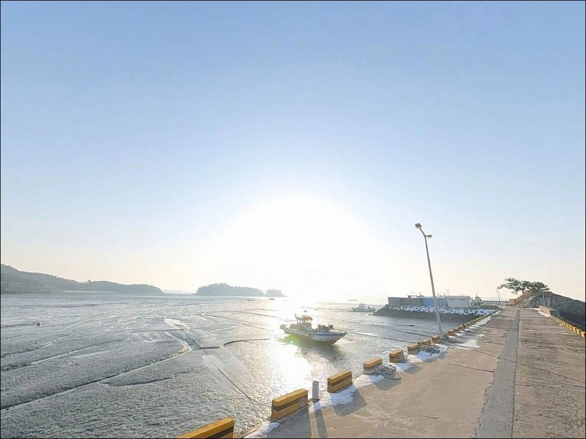
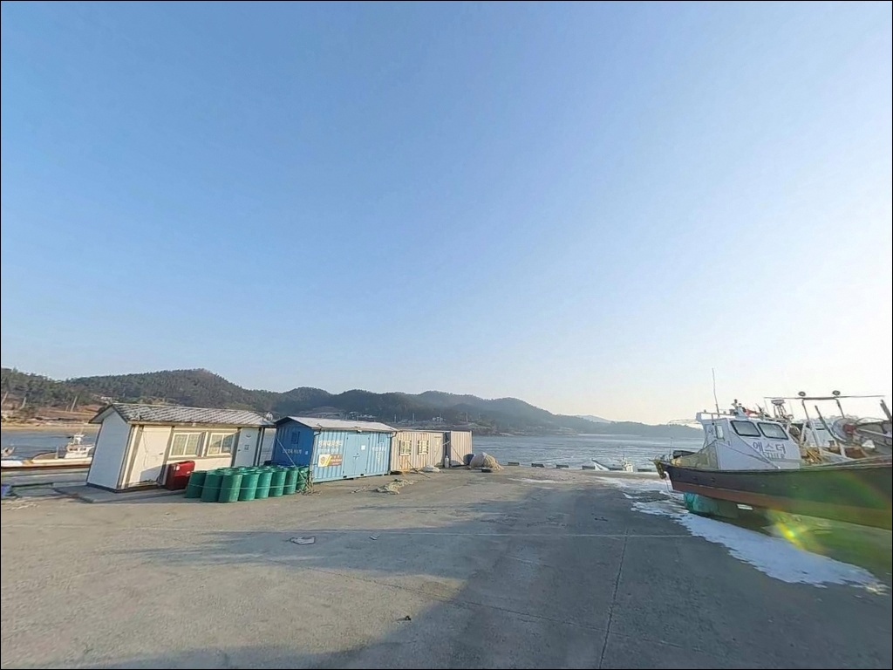
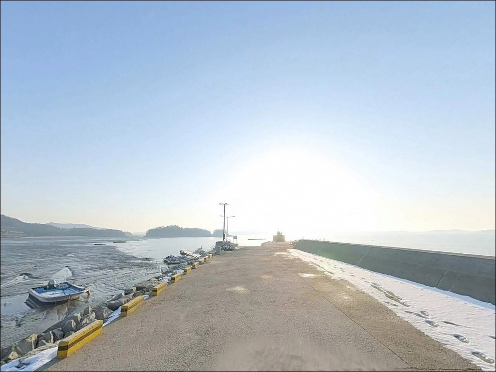
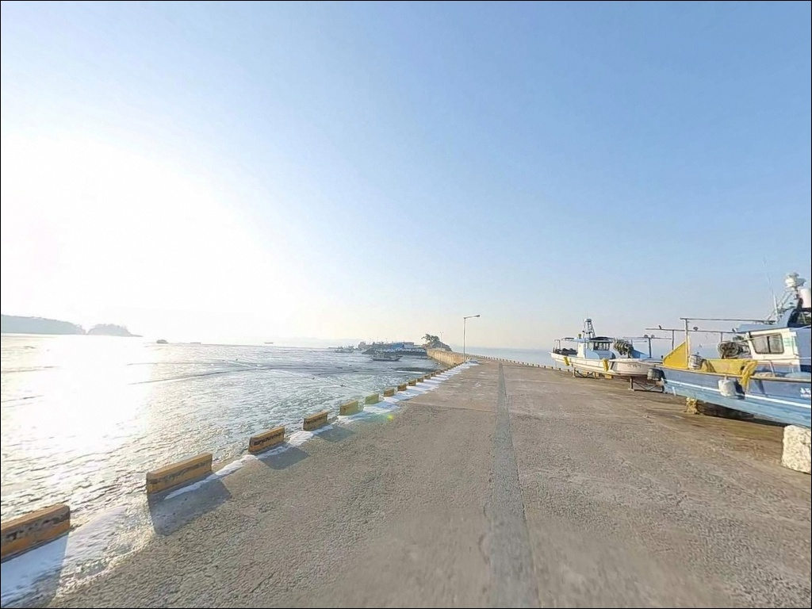

검산항, 증도 전남 신안군 고요함이 매력인 차박, 낚시 감성 장소
이 페이지에는 광고(제휴 링크 포함)가 있으며, 광고 링크를 통해 구매하면 운영자가 판매 수익 또는 수수료를 받을 수 있습니다. 포인트 사진: 카카오맵 스카이뷰·로드뷰. 이 페이지의 지도·사진 이미지는 카카오맵의 실제 서비스 이미지와 다를 수 있습니다.


포인트 안내
검산항
전남 신안군 증도면 방축리 873-5
간조 시 수심이 급격히 줄어드는 서해 조간대 특성을
모르고 검산항에 도착하면,
진입하려던 포인트가 이미 갯벌로 바뀐 상황을
맞닥뜨리게 됩니다.
사리 전후 조류가 강해지는 시간대에는
에깅 채비를 던져도 조류에 밀려
컨트롤 자체가 불가능해지는 구조입니다.
증도 서쪽 방축리에 자리한 검산항은
1973년 지방어항으로 지정된 항구로,
방파제와 물양장이 갖춰진 외해 방향 포인트입니다.
갑오징어 에깅과 삼치 워킹 루어 거점으로
낚시인들 사이에서 이름이 오른 곳이기도 합니다.
이 글은 검산항의 진입 동선,
낚시 여건, 물때 판단 기준,
차박 조건과 보호구역 사전 확인 사항에 집중합니다.
조황 단정과 특정 어종 보장은
이 글의 범위에 포함되지 않습니다.

1. 진입 동선과 포인트 접근성
검산항은 2010년 개통된 증도대교를 통해
차량 접근이 가능한 섬 내 지방어항입니다.
증도 본섬 도로망과 직접 연결된 항구라
진입성은 서해 도서 지역 항구 중
비교적 양호한 편에 속합니다.
방축리는 증도 서북쪽에 위치하며,
섬 내 도로를 따라 진입하는 구간에서
폭이 좁아지는 구간이 일부 포함될 수 있습니다.
대형 차량이나 캠핑 장비를 갖춘 차량이라면
위성지도로 진입로를 사전 확인하고 가는 편이 좋습니다.
항만 내 공터와 물양장 인근 도로변이
주차 후보가 되는 구간입니다.
지방어항 특성상 어선 이동 동선이 있으므로
작업 공간을 막지 않는 자리를 먼저 살핍니다.
회차 공간은 소형~중형 차량 기준으로
항 내에서 확보 가능한 수준입니다.

2. 차박 환경과 야간 체류 여건
검산항이 위치한 증도는 국제 다크스카이 지정 섬으로,
가로등 설치가 매우 제한적인 지역입니다.
방파제·물양장 주변에 가로등이 일부 있을 수 있으나,
야간 전체적으로 조명이 극히 적은 환경입니다.
헤드랜턴과 보조 조명은 필수 장비입니다.
방축리 검산마을은 민가 밀집도가 낮은 어촌 마을로,
야간 차량 통행이 적어 조용한 체류 환경이 기대됩니다.
다만 서쪽 해안 노출 특성상 계절에 따라
바람 영향을 받을 수 있어
기상 예보와 풍향 확인이 출발 전 필요합니다.
증도는 갯벌도립공원·람사르습지·
유네스코 생물권보전지역으로 중복 지정된 곳입니다.
지정 구역 내에서는 야영·취사가
원칙적으로 허용되지 않을 수 있으므로,
차박 전에 신안군청(061-240-8524) 또는
증도면사무소(061-240-4003)에 사전 확인이 먼저입니다.


3. 주변 편의시설 및 인프라 현황
검산항 인근에서 확인된 편의시설로는
엘도라도 리조트 내 편의점과 카페가 있습니다.
섬 내 도로 이동 기준으로 수 km 거리이며,
식수·얼음·간식 등을 보충하는 용도로
활용 가능한 곳입니다.
증도 내에는 짱뚱어탕과 장어를 전문으로 하는
식당이 있습니다.
운영 시간과 위치는 사전에 확인하는 편이 안전하며,
낚시 소품과 채비류는
증도 입도 전에 미리 준비하는 것이 기본입니다.
응급 의료 시설은 증도 내에 매우 제한적이며,
증도대교를 건너야 접근이 가능합니다.
비상약품, 수분, 연료는
출발 전에 완비해두는 것이 원칙입니다.

4. 물때를 놓치면 공치는 포인트 — 방문 전 준비사항
검산항 방문 전 가장 먼저 확인할 것은 물때입니다.
증도 서쪽 해안은 서해 조간대 특성상
간조와 만조 차이가 크고,
바다타임에서 방축리 기준 물때를 확인한 뒤
만조 전후 수심 확보 타이밍을 노려
출발 시각을 맞추는 것이 기본 전략입니다.
사리 전후에는 조류가 너무 강해
에깅 채비 컨트롤이 어려워지는 수준까지 세집니다.
조금 전후 타이밍을 먼저 계산하고 입장하는 것이
이 포인트를 제대로 공략하는 방법입니다.
갯벌도립공원 야영 가능 여부 확인,
기상청 해상예보 체크도
출발 당일 아침에 다시 한번 점검해야 합니다.
사니질·암초 혼재 지형 특성상
채비 손실이 잦은 편입니다.
에기와 봉돌 여분은 넉넉히 챙기고,
야간 낚시 시에는 구명조끼와 헤드랜턴을
반드시 지참합니다.
어항 내 어선 동선과 어구에
접촉하지 않도록 자리를 잡는 것이 기본 매너입니다.

5. 지형 기반 낚시 여건 분석
검산항은 지방어항으로 방파제 약 200m,
물양장 100m가 갖춰진 항구입니다.
증도 서쪽 해안에 위치해 외해 방향으로 열려 있어,
동쪽의 증도항보다
서해 조류 영향을 더 직접적으로 받는 구조입니다.
방파제 끝단과 항 입구 쪽은
수심이 비교적 빠르게 깊어지는 구간입니다.
외항 쪽에는 조류 흐름이 살아 있어
회유성 어종의 길목 역할을 하는 자리이며,
이 구간이 에깅과 워킹 루어의 핵심 포지션입니다.
서해 조간대 특성상 간조 시에는
수심이 크게 줄어드는 구간이 생기므로
만조 전후를 기준으로 한 타이밍 공략이
이 포인트를 제대로 쓰는 방법입니다.
바닥은 사니질과 암초가 혼재하는 구조라
채비 손실에 대비한 여분 준비는 기본이며,
최신 조황은 출조 전에 꼭 검색해 보시기 바랍니다.


6. 검산항에서 어울리는 낚시 스타일
갑오징어 에깅이 이 포인트에서
가장 먼저 꼽히는 낚시 스타일입니다.
검산항은 증도 갑오징어 낚시의 메인 거점으로
이름이 오른 곳으로,
방파제 외항 라인의 수심 변화 구간이
에기 폴링 액션에 유리한 자리입니다.
봄부터 늦가을까지 시즌 폭이 비교적 넓습니다.
삼치를 노리는 워킹 루어낚시도
이 포인트와 잘 맞는 스타일입니다.
조류가 흐르는 방파제 끝단과 항 입구 방향에서
메탈 지그나 미노우를 캐스팅하며
외항 라인을 따라 이동하는 방식이며,
가을 삼치 회유기 이른 아침과
해 질 무렵에 집중하면 효율이 올라갑니다.
원투낚시도 이 포인트 구조에 어울립니다.
방파제 끝단에서 외해 방향으로 채비를 보낸 뒤
바닥을 천천히 탐색하는 방식이며,
감성돔, 숭어, 농어 등
이 해역에서 기대해볼 수 있는 어종을 노릴 때
만조 전후 입질 타이밍을 노리는 것이 기본입니다.

7. 대안 포인트와 플랜 B 동선
검산항 조류가 너무 강하거나
주차 공간이 여의치 않을 때
첫 번째 대안은 증도항입니다.
증도 동쪽에 위치한 섬의 중심 항구로
시설이 잘 갖춰져 있고,
갑오징어 낚시 포인트로도 알려진 곳이라
에깅 스타일로 이동했을 때 운용의 연속성이 유지됩니다.
증도에서 나와 지도읍 방면으로 이동하면
지도읍 송도항을 대안으로 고려할 수 있습니다.
갑오징어 포인트이면서
편의시설 접근성이 증도 내보다 우수한 편이라,
장비 보충이나 식사가 필요할 때
동선을 함께 묶을 수 있습니다.
신안군 임자도·사옥도 방면 방파제들은
삼치 등 회유성 어종을 노리는
워킹 루어 포인트로 정리된 곳들입니다.
기상과 풍향에 따라
교차 운용이 가능한 같은 서해권 대안으로
참고할 수 있습니다.

갯벌 위에서 에기를 던지는 게 아니라
물골이 살아 있을 때 들어가야 합니다
갑오징어 에깅이나 삼치 워킹 루어를
즐기는 낚시인이라면
검산항 방파제 외항 라인은
시즌 조류가 제대로 흐를 때
잘 맞는 구조를 갖춘 포인트입니다.
조황 정보가 많지 않은 만큼
직접 물때를 맞춰 가봐야 하는
탐험형 성격이 강한 곳이기도 합니다.
다만 간조 시 갯벌이 넓게 드러나고
사리 전후 조류가 강해지는 서해 조간대 특성상,
물때 확인 없이 도착하면
낚시 자체가 불가능한 상황이 됩니다.
물때 확인, 보호구역 사전 문의,
완전 자급 준비,
이 세 가지를 갖추고 가는 것이
검산항을 제대로 쓰는 방법입니다.
다크스카이 지정 섬 증도의 조용한 서쪽 해안에서
낚시와 하룻밤 차박을 함께 생각하는 분이라면,
보호구역 야영 가능 여부만 미리 확인해두면
기억에 남는 출조가 될 수 있는 포인트입니다.